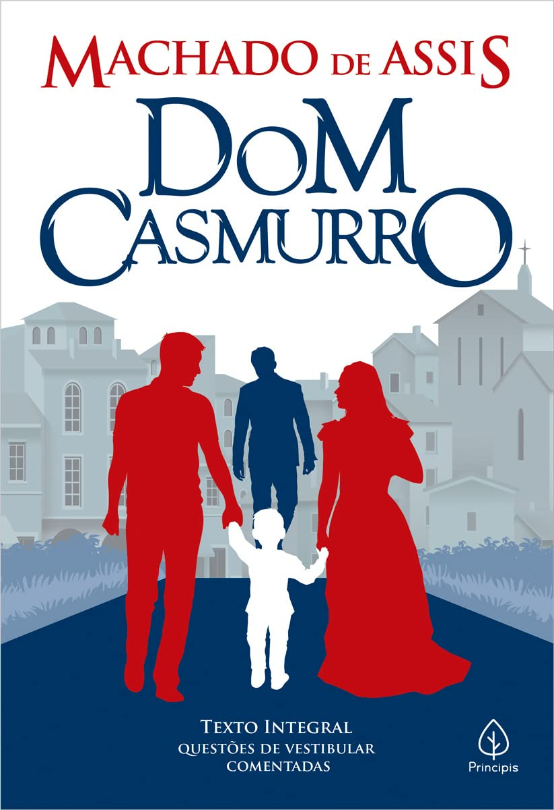
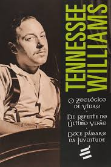
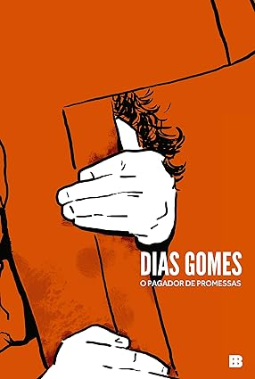

ONDE A VIDA ENCONTRA O PALCO
O teatro brasileiro e como
ele moldou meus sonhos e quem eu sou.
HISTÓRIA DO TEATRO BRASILEIRO
O início do teatro no Brasil aconteceu com apresentações organizadas por padres jesuítas no século XVI, sendo José de Anchieta uma figura importante nesse contexto, considerado o primeiro dramaturgo brasileiro.
Com o tempo, a arte evoluiu para atender às preferências da aristocracia e, posteriormente, passou a representar diversos segmentos da sociedade. Dessa maneira, ao longo dos anos, ocorreram transformações, culminando na formação dos primeiros grupos teatrais nacionais na primeira metade do século XX.
Ao chegarem no Brasil e se depararem com os povos indígenas, os portugueses planejaram maneiras de exercer controle sobre o território e a população nativa. Assim, com o intuito de converter os indígenas ao cristianismo, os religiosos empregaram o teatro como uma ferramenta de doutrinação, dando origem ao chamado teatro de catequese.
Essa escolha se deu porque o formato teatral possibilitava a transmissão das ideias cristãs de maneira mais acessível, facilitando a comunicação das mensagens trazidas pelos colonizadores.
SOBRE MIM
Projeto Passarela:
Sempre fui muito fã da Larissa Manoela, por isso, participei do Projeto Passarela (projeto para artistas) duas vezes, sendo a segunda em 2017, quando tinha 10 anos. Não passei para a segunda fase em nenhuma vez e, na época eu senti uma dor psicológica absurda, mesmo que minha mãe dissesse que aquele ali era só mais um dos "nãos" que receberia.
Peças:
Uma peça que me marca até hoje se chama "Avenida Paulista, da Consolação ao Paraíso"
Teatro e testes
Estudei na Teatro Escola Macunaíma, uma das melhores escolas de formação teatral brasileira. Finalizei o curso para iniciantes, mas infelizmente precisei parar no meio do curso profissionalizante. No final de 2025 e começo de 2026, participei de dois testes audiovisuais, um para longa-metragem biográfica e outro para uma série médica.

Dom Casmurro

O Zoológico de Vidro

>